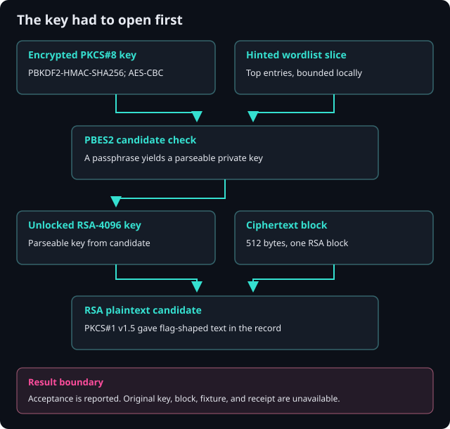

Abacus / Cyber Ops / CTF Writeups / Crypto / The Private Key Behind a Common Word
The Private Key Behind a Common Word
I could not use the encrypted key until I understood its wrapper. The ASN.1 parameters gave me a smaller, more useful problem: try the hinted wordlist against the exact PBES2 profile.
Summary
The challenge. Unlock a password-protected private key and recover the flag from a single RSA ciphertext block.
What I did. I identified the PKCS#8 protection parameters, tried a bounded dictionary with a key loader, then checked RSA padding against the recovered plaintext shape.
The result. The case record reports a printable flag and platform acceptance; the passphrase and flag are withheld.
The limit. The challenge key, ciphertext, original scripts, fixture, and acceptance receipt were not supplied for independent replay.
Case details
| Field | Value |
|---|---|
| Category | Password Cracking / Applied Cryptography |
| Difficulty | Medium |
| Tags | PKCS#8, PBES2, PBKDF2-HMAC-SHA256, AES-256-CBC, RSA-4096, dictionary attack, rockyou, PKCS#1 v1.5 |
| Status | Solved |
| Recorded result | A passphrase unlocked the RSA-4096 key; PKCS#1 v1.5 yielded a printable flag that the case says the platform accepted. The secret values remain withheld. |
| Evidence boundary | I have the written case record, but not the challenge files, original scripts, fixture, or acceptance receipt. The linked tools were newly built and tested with synthetic material. |
The reusable local proofs of concept are in the GitHub artifacts folder. Their tests do not replay the challenge.
The case record assessed the difficulty as Moderate; Medium is the portfolio's closest level.
1. Problem Statement and Threat Scenario
I was given an encrypted private key in PEM form and a small binary file described as an unreadable flag. The hint said a short script and the first few thousand entries of a common wordlist would be enough. My job was to recover one flag string. The source account withholds the passphrase and flag, so this page does too.
I treated this as a cryptography puzzle. No target host, defender telemetry, or adversary operation came with it. Later sections use the puzzle to examine a real key-management failure mode, but that is an operational analogy, not something observed in the challenge.
2. Techniques, Tooling, and Actions Taken
I first checked what the two files actually were. The key began with ENCRYPTED PRIVATE KEY, the PKCS#8 encrypted-key PEM label. The ciphertext was exactly 512 bytes, the size of one RSA-4096 block. The case notes say I hashed both files during triage, although their digests are not in the record.
I then used openssl asn1parse to read the key wrapper. It identified PBES2, PBKDF2 with HMAC-SHA256, a low iteration count, and AES-256-CBC. The exact count was not retained. This was the useful fork: I needed guesses against this serialized key, and the challenge hint favored a small custom loop. I did not independently test which Hashcat or John the Ripper builds supported that profile; the solve record says the available mainstream options were unsuitable.
I fed wordlist candidates to load_pem_private_key. A wrong candidate failed decryption or key parsing. Within the hinted top entries, one candidate loaded a 4096-bit RSA private key. That let me move to the 512-byte ciphertext. The source says OAEP with SHA-256 and SHA-1 failed, while PKCS#1 v1.5 produced a printable, flag-shaped message. It reports platform acceptance. There is no receipt here to independently confirm that last step.
3. Tooling and Scripts
The solve-time sequence began with format checks and ASN.1 inspection:
file key.pem ciphertext.bin
wc -c ciphertext.bin
openssl asn1parse -in key.pem | head -40
# Recorded: ENCRYPTED PRIVATE KEY, 512-byte ciphertext,
# PBES2 / PBKDF2-HMAC-SHA256 / AES-256-CBC.
The core of the reported recovery was a load-and-catch loop. It did not need to implement PBKDF2 or AES itself:
from cryptography.hazmat.primitives.serialization import load_pem_private_key
pem = open("key.pem", "rb").read()
with open("wordlist.txt", "rb") as words:
for raw in words:
candidate = raw.rstrip(b"\r\n")
try:
key = load_pem_private_key(pem, password=candidate)
except (ValueError, TypeError):
continue
print("candidate line matched")
break
The recorded run was limited to the first 10,000 rockyou entries, then tested OAEP-SHA256, OAEP-SHA1, and PKCS#1 v1.5. For reuse, I linked a bounded key checker, RSA block reviewer, synthetic tests, and guide. They use no challenge secret. The checker reports a matching wordlist line by default; the decryptor prompts for the password and needs an expected plaintext prefix to choose a candidate.
4. Concept Explanation
PKCS#8 describes the private-key container. In this case PBES2 protected that container: PBKDF2-HMAC-SHA256 derived an AES-256-CBC key from a passphrase and salt, then AES encrypted the serialized private key. The iteration count controls part of the cost of each guess. A low count and a common-word passphrase made the hinted dictionary search practical. RFC 8018 defines PBES2 and PBKDF2.
There is a detail I would not gloss over: AES-CBC in this PBES2 profile has no authentication tag. A successful load_pem_private_key call means the bytes decrypted into a parseable private key. It is strong practical evidence for the candidate, but the code is not checking a PBES2 message-authentication code. The library documentation describes decryption and structural errors for this loader.
The second lock was RSA padding. A 4096-bit modulus produces 512-byte ciphertext blocks. OAEP and PKCS#1 v1.5 encode plaintext differently, so the matching scheme must be used to recover it. Even here, a decryption API returning bytes is not alone proof of the intended message. Some implementations deliberately return synthetic bytes for invalid PKCS#1 v1.5 padding to reduce oracle risks. I need the expected flag shape and, ideally, platform feedback before saying I have the challenge answer.
5. Exploit / Analysis Mechanics
The chain had two dependencies. I needed the weak passphrase before the RSA private key was usable; I needed the private key before I could read the ciphertext.
- Unlock the key. The encrypted PKCS#8 file and hinted wordlist gave me a bounded offline search. For each candidate, the loader ran the file's PBKDF2 and AES-CBC profile and attempted to parse the result. The source reports one clean load and a 4096-bit RSA key. A dictionary passphrase and low KDF cost were the weaknesses. The exact work factor cannot be recalculated because the iteration count and original key are absent.
- Recover the flag. The ciphertext length matched the modulus. The record says both OAEP choices failed and PKCS#1 v1.5 yielded printable text in the expected flag format. The challenge platform reportedly accepted it. No raw flag or receipt was provided for this publication.
The first stage is a key-load check, not a free-standing proof of authenticity. The second is a padding and plaintext-shape check, with reported platform acceptance as a separate result. I keep those claims apart because the local artifacts are unavailable for replay.
6. Lessons Learned
I got the most value from reading the wrapper before trying passwords. ENCRYPTED PRIVATE KEY told me what to inspect; ASN.1 gave me the KDF and cipher. Once I knew the profile, the short loader loop was a better fit than guessing which off-the-shelf mode might apply.
I would repeat that order on the next encrypted-key task: identify the serialization, record the salt/PRF/iteration/cipher parameters, then choose an appropriate recovery or audit method. When an unknown parameter has a short plausible set, as RSA padding did here, I can test each deliberately and check the resulting plaintext against independent expectations.
| Exercise behavior | Operational analogue |
|---|---|
| Common-word key passphrase | Exported private keys can be left behind weak human secrets |
| Low PBKDF2 work factor | Legacy wrapping settings make offline guessing cheaper |
| Local dictionary attempts | An attacker with a copy of key material faces no account lockout |
7. Operational Extrapolation
Individual Practitioner Development
This gave me practice reading PKCS#8/PBES2 parameters, reasoning about password-based KDF cost, and identifying an RSA padding scheme from the result. A useful next exercise would compare the same workflow against a properly costed key export or a supported memory-hard wrapping format. The result would show how the economics change, rather than assuming a fixed count is universally safe.
Security Operations
An offline cracker operating on copied key material does not emit a defender-side login failure. I would focus on where private keys are created, stored, exported, and moved. A managed-endpoint or repository scan for encrypted-key PEM headers could find inventory candidates; authorized review of their KDF parameters could prioritize weak wraps. Such a scan needs careful access controls and false-positive handling because legitimate encrypted keys are common. Section 12 scopes this as a proposed hygiene workflow, not a deployed detector.
Intelligence Operations
The record does not support a separate intelligence-operation claim. I keep the heading to account for that limit.
8. Reusable Tools, Scripts, and Artifacts
The key checker takes a PEM key, a wordlist, and a candidate cap. The RSA block reviewer takes that key and one ciphertext block, prompts for the passphrase, tests the three schemes described above, and writes only a candidate matching an expected prefix to a new file. Neither has hardcoded challenge secrets. The guide states the inputs, secret-handling behavior, and limits.
I tested them with a throwaway key and ciphertext created at test time. The test suite covers a wordlist hit, a capped miss, PKCS#1 v1.5, OAEP-SHA256, and a length mismatch. It is a functional proof of the local approach. The original case fixture, passphrase, key, ciphertext, and accepted flag were not available, so the published test is not a challenge replay or a performance benchmark. The checker is single-threaded and performs no word mutations.
9. Framework Applicability and Mapping
This was a puzzle, not an observed adversary. I use the mappings as comparisons for a captured-key scenario:
| Behavior | Framework | ID | Why it fits | Scope |
|---|---|---|---|---|
| Offline wordlist recovery of a key passphrase | MITRE ATT&CK | T1110.002 | Password cracking after access to protected material | Analogical; no adversary observed |
| Dictionary candidates | CAPEC | CAPEC-16 | The wordlist method used in the exercise | Method comparison, not a system finding |
| Repeated candidate guesses | CAPEC | CAPEC-49 | General parent pattern | Broad analogy |
I do not map STRIDE or OWASP here. There was no application design or web target to model.
10. Threat Intelligence and Standards Integration
I found no network address, host behavior, infrastructure, or reusable adversary indicator in this challenge. A STIX bundle, TAXII feed, or STIG finding would imply evidence the record does not contain. For real investigations, I would exchange the behavior only after obtaining actual context: how key material was exposed, which systems held copies, and whether its corresponding public key is trusted anywhere.
11. Controls Mapping and Mitigation Realization
Standards Mapping
| Reference | ID | Relevance | Boundary |
|---|---|---|---|
| MITRE CWE | CWE-521 | A common dictionary passphrase is a weak secret | Analogy to a real product's password policy |
| MITRE CWE | CWE-916 | Low KDF effort makes offline guessing cheaper | The exact iteration count is absent |
| MITRE CWE | CWE-326 | Broad inadequate-protection concern | Too general for a direct defect finding |
| NIST | SP 800-132 | Password-based derivation for stored key protection | Guidance to evaluate, not proof of compliance |
| NIST | SP 800-63B | Blocklists and longer secrets inform password practice | Authentication guidance, applied by analogy to key wrapping |
Mitigation Realization
For a key I owned, I would replace a common-word passphrase, review the KDF settings supported by the consuming applications, and re-wrap the key with an appropriate cost. OpenSSL's PKCS#8 tool supports an iteration setting. The source proposed this illustrative command:
openssl pkcs8 -topk8 -in plain_key.pem -out key_hardened.pem \
-v2 aes-256-cbc -v2prf hmacWithSHA256 -iter 600000
The command needs a plaintext input key and a securely handled output. Its 600000 value is an example, not a current universal target or a challenge-tested configuration. I would test compatibility and measure cost on the actual environment. I would also screen newly chosen passphrases against common and compromised values and favor length. No real key rotation was performed for this CTF.
12. Indicators, Artifacts, and Detection Engineering
There is no reliable network or SIEM event for the offline guesses themselves. I do not call a PEM header an IOC. It is a file type marker that could start an authorized key-inventory workflow.
The proposed workflow is: find BEGIN ENCRYPTED PRIVATE KEY blocks in allowed repositories or managed endpoint locations, record only the path and metadata needed for ownership review, inspect KDF parameters under access control, and notify the key owner when a weak wrap is confirmed. Benign encrypted keys will dominate the first pass. A DLP or file-content scanner is required; proxy logs alone cannot see a local PBES2 search. I did not run such a scan or validate a production rule.
13. Visual Artifact
The short analysis flow at the top and this standalone SVG show why the two locks had to be opened in order. The diagram also marks the reported acceptance as distinct from the synthetic tests.


The original Mermaid sketch expresses the same dependency:
flowchart LR
A[Encrypted PKCS8 private key] --> B[Dictionary attack on passphrase]
W[Wordlist top entries] --> B
B --> C[Unlocked RSA-4096 private key]
D[Single RSA ciphertext block] --> E[RSA decrypt with PKCS1 v1.5]
C --> E
E --> F[Recovered flag withheld]
14. References
The source account used these references for its method and mappings. I checked the primary documentation for PBES2, the loader, OpenSSL's PKCS#8 options, and the cited technique pages while preparing this page.
| ID | Source | Use |
|---|---|---|
| R1 | MITRE ATT&CK T1110.002 | Analogical offline password-cracking mapping |
| R2 | MITRE CAPEC-16 | Dictionary method |
| R3 | MITRE CAPEC-49 | General password brute forcing |
| R4 | MITRE CWE-521 | Weak passphrase analogy |
| R5 | MITRE CWE-916 | Insufficient password-hash effort analogy |
| R6 | MITRE CWE-326 | Broad encryption-strength category |
| R7 | NIST SP 800-132 | Password-based key derivation |
| R8 | NIST SP 800-63B | Common-password screening guidance |
| R9 | RFC 8018 | PBES2 and PBKDF2 specification |
| R10 | cryptography key serialization | Loader behavior and errors |
| Additional | OpenSSL pkcs8 manual | Re-wrapping example and supported options |